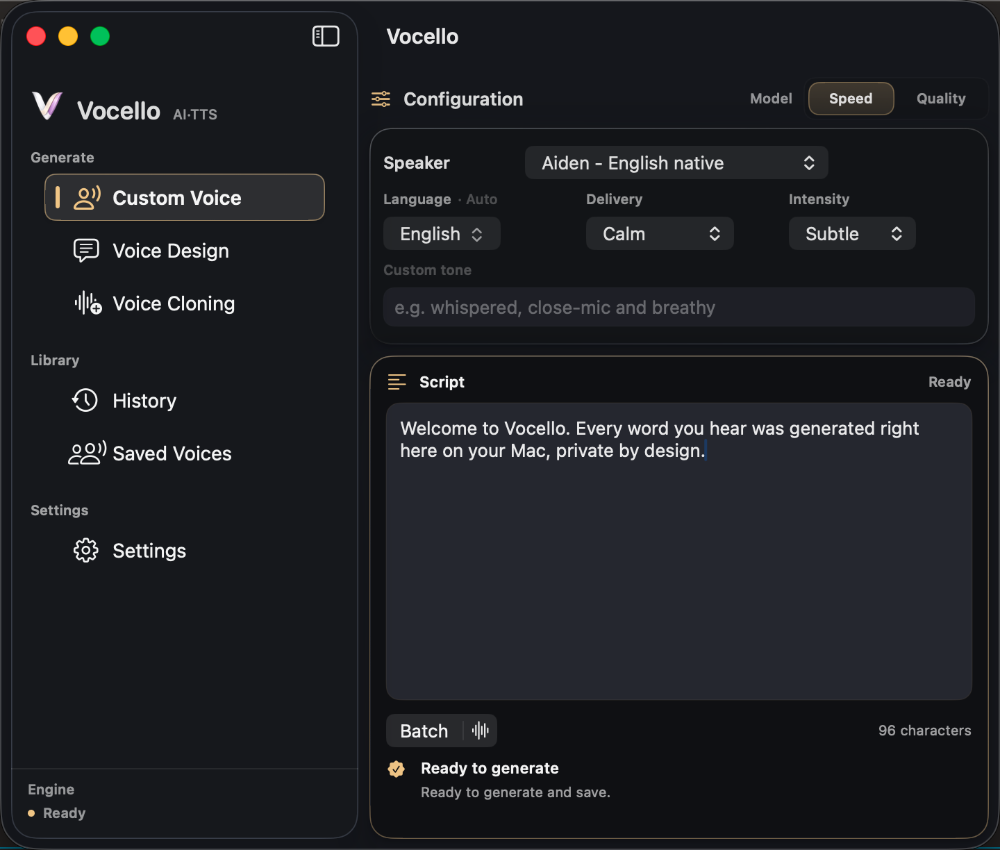
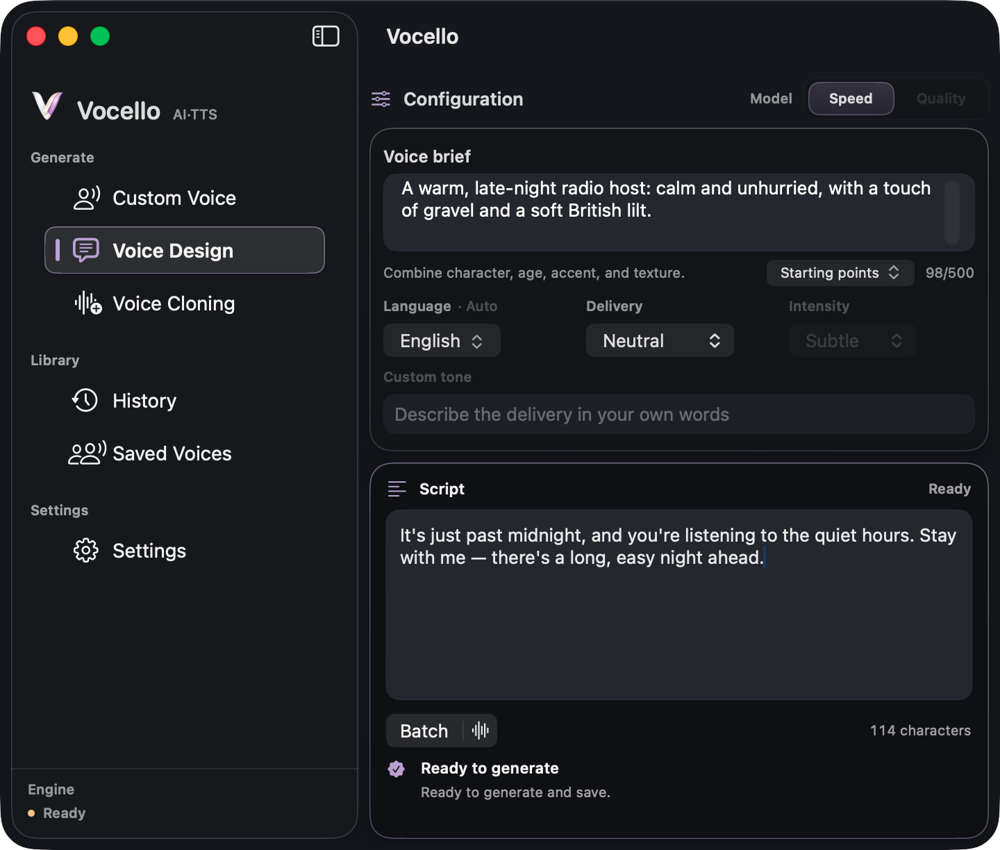
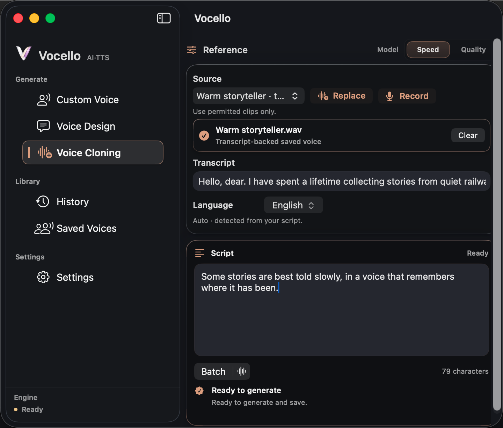
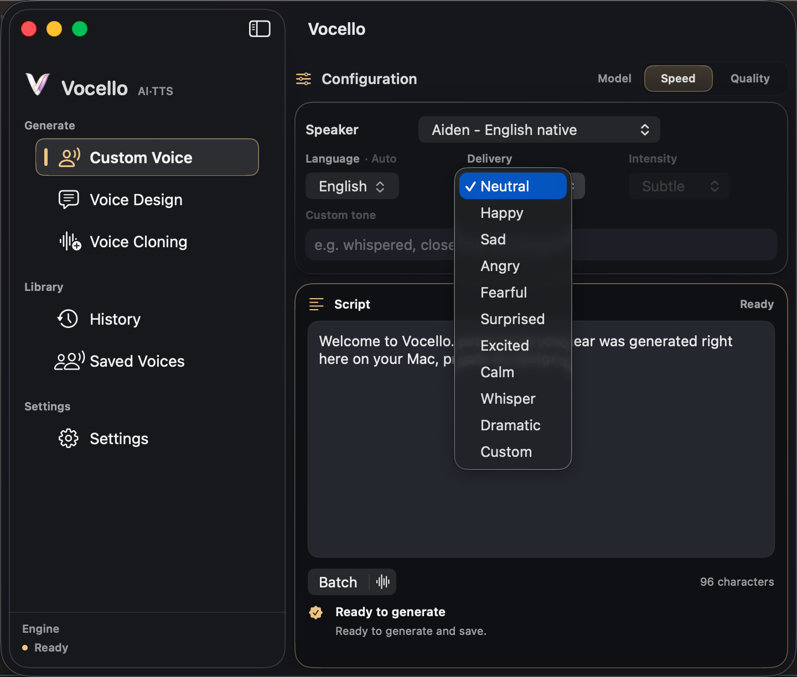
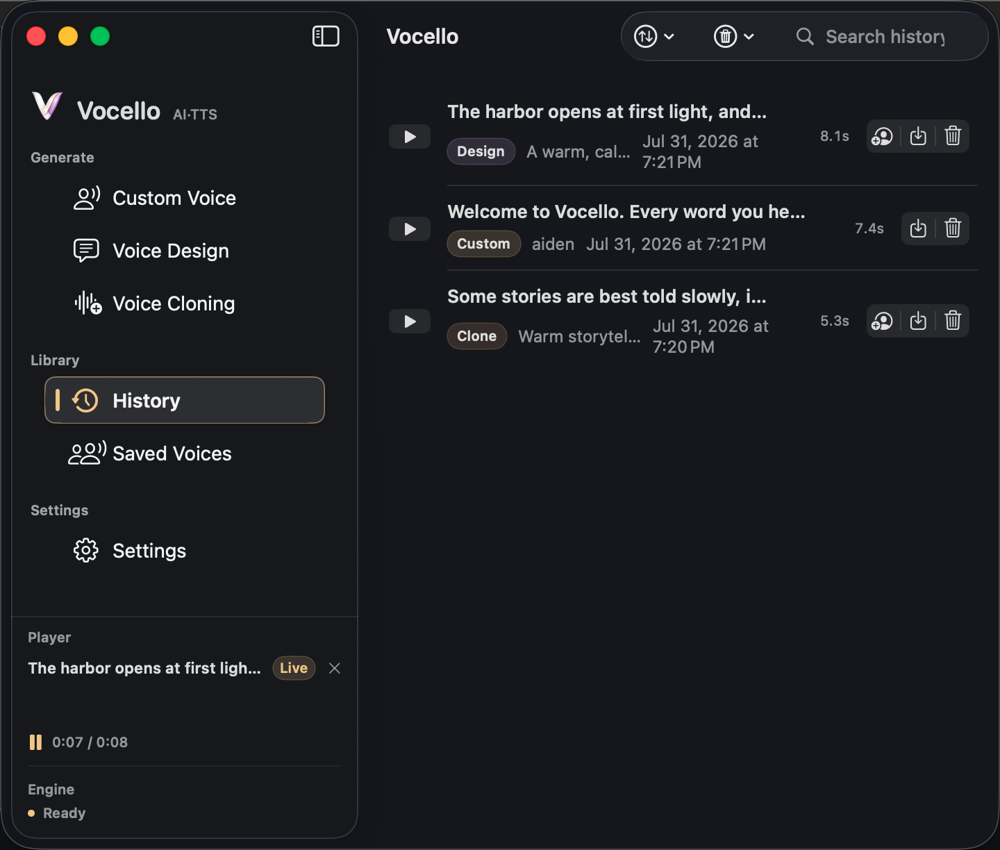
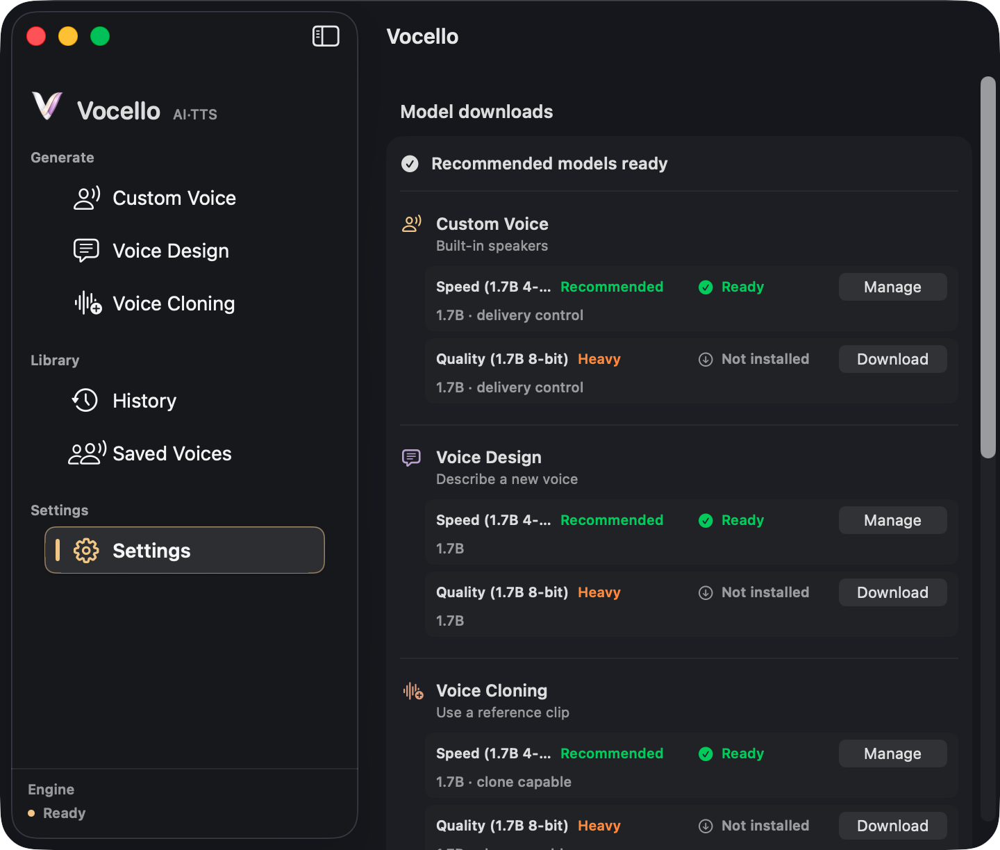
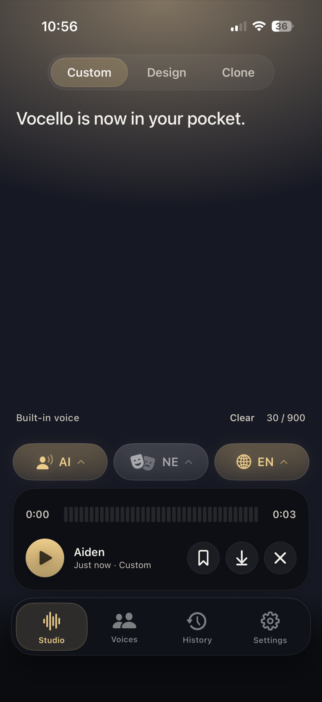

Premium voice studio. Proven performance. Private by design.
A voice studio that never leaves your Mac. Write a script, pick a preset or describe a voice, and generate speech locally on Apple Silicon. Ten languages and responsive native generation after a one-time model download.

01 · Selected speaker presets
Pick a voice. Set the delivery. Generate.
Choose one of nine built-in Qwen3-TTS CustomVoice speaker presets, set the delivery, and turn a script into a clean spoken line. The simplest path when you want a consistent voice right away.
- 01
Nine built-in speaker presets
English, Chinese, Japanese, and Korean native presets, each tuned to its language.
- 02
Delivery presets
Eight delivery presets: four distinct deliveries (Neutral, Calm, Whisper, Sad) that come through reliably, and four directional hints (Happy, Sad-adjacent Fearful, Angry, Surprised) that shape energy and pace.
- 03
Custom tone field
Describe the delivery in your own words when the chips aren't enough.

02 · Describe a new voice
Describe the voice in plain language.
Write a voice brief, "a warm, deep narrator with a subtle British accent," and Vocello shapes a fresh voice around it. No model wrangling, no presets to memorize.
- 01
Voice brief
One tight sentence describing timbre, accent, or delivery style.
- 02
Save what works
Keep designed voices in Saved Voices and re-use them in any future script.
- 03
Local generation
The brief never leaves your Mac. Designed voices live in app storage.

03 · From a saved voice or reference clip
Clone from a clip you own.
Pick a voice you already designed in Saved Voices, record a short reference clip with the microphone, or import an audio file. Transcript-backed saved voices can reuse prepared Qwen3 clone prompts for cleaner repeat generations. Only clone voices you have permission to use.
- 01
Saved, recorded, or imported
Pick any voice from Saved Voices, record a clip in the app, or import a reference file on either platform. The Mac open panel accepts WAV, MP3, AIFF, M4A, FLAC, OGG, or WebM; the iPhone Files picker accepts WAV, MP3, AIFF, or M4A. Saved Voices are optimized for repeat use.
- 02
Transcript-backed quality
Paste the words spoken in the clip, or let Vocello transcribe them locally, for the strongest reusable clone prompt. Audio-only references remain available as a lower-guidance fallback.
- 03
Source-led delivery
Voice Cloning follows the reference clip. Delivery presets are not exposed for this path today.
Listen first
Five voices.
Three ways to ask for them.
Each row carries the brief or speaker, the script, the delivery setting that produced it, and a waveform from the local render. The set includes a Japanese take and a 31 second narration. Install Vocello to generate your own.
“The valley opens after the last bend, slow, and quieter than the road would suggest.”
Calm0:08“Hey, welcome back to Field Notes. Today we're walking through the demo build, end to end.”
Excited / Normal0:06“音声はすべて、このMacの上で生成されます。台本も声も、どこにもアップロードされません。”
Neutral0:09“Every measurement was logged, every observation written down. Only then could the model be trusted.”
Mirrors source clip0:09“Chapter one. The harbor was quiet at that hour, and the water held the last of the light. She walked the length of the pier with her notes in one hand…”
Calm0:31
Built-in Voice and Voice Design shape a take with one of ten delivery presets, each at normal or strong intensity.

In the studio
Built for long scripts.
Vocello turns long scripts into finished projects, speaks ten languages, and installs models reliably. Everything runs locally on your Mac.
- Long scripts become projects
- A script past the single-take limit is planned into segments, generated in order while you listen along, and joined into one finished audio file. History keeps the project with a per-segment map, and a single weak segment can be regenerated without redoing the rest.
- Ten languages, detected automatically
- Chinese, English, Japanese, Korean, German, French, Russian, Portuguese, Spanish, and Italian. Vocello detects the script's language on its own, and a manual language choice is always available.
- Downloads that behave
- Model installs run three files at a time, retry interrupted transfers automatically, and verify integrity without re-reading multi-gigabyte files. Shared components are stored once across models, saving disk.

Why not cloud TTS?
Local first, with the setup caveat.
If you arrived looking for an ElevenLabs local alternative for Mac, Vocello's answer is narrower and quieter: your scripts become speech on your own Mac, and nothing you write or generate leaves it.
| Vocello | Cloud TTS services | |
|---|---|---|
| Price | Free, MIT licensed | Subscription or credit packs |
| Where speech is generated | On your Mac | On the provider's servers |
| Your script | Stays in local app storage | Uploaded to generate |
| Metering | None | Per character or per minute |
| Account | None | Required |
| Raw English naturalness | Strong; judge the samples above | The best cloud voices still lead |
Setup is not air-gapped: models download from Hugging Face during setup and updates. After that download, generation runs locally.
How it runs
Vocello runs on your Mac.
The privacy story is not a badge on top. It is how the app is built, how models install, and where generated audio stays.

- Where generation happens
- On your Mac
- After models download from Hugging Face and install, every line renders locally. No scripts uploaded and no generated audio sent to a cloud TTS service.
- Where data lives
- Local app storage
- Scripts, history, saved voices, and generated audio stay in Vocello's local storage until you export or reveal a file yourself.
- Pricing
- Free on Mac
- The Mac app is free and open-source. Download the Speed or Quality model from Hugging Face once and generate as many lines as your Mac can hold. No subscription, no per-character meter, no queue.
- Speed model
- 4-bit
- Smaller package, faster startup, lower memory. Vocello defaults to Speed on 8 GB / floor-spec Macs. Manage in Settings, Model Downloads.
- Quality model
- 8-bit
- Larger package, slower to warm up, finer timbre and delivery. Vocello defaults to Quality on Macs with more RAM. Speed and Quality can coexist; pick the active variant on each generation screen.
Vocello for iPhone
The same studio, in your pocket.
The iPhone app runs the same local engine in-process on the phone: Built-in Voice, Voice Design, and Voice Cloning with the memory-conscious Speed model, microphone recording, audio file import, or a saved Voice Design reference for cloning, and local history.

Measured, not promised
A first-party engine, measured on the minimum Mac.
Vocello is benchmarked on its own support floor, a Mac mini M2 with 8 GB. Speeds are multiples of realtime: past 1.0×, audio generates ahead of playback, and every number here traces to a tracked record in the open repository.
- Swift end to end
- Generation runs through Vocello's own Swift runtime on MLX, derived from mlx-audio-swift and narrowed to the Qwen3 voice stack: about 36,000 of 49,000 upstream lines removed, no Python, no local server.
- One engine, three hosts
- On the Mac the engine lives in a separate service process that steps away when idle, so heavy engine memory can never take the app down. The iPhone app and the command-line tool run the same engine.
- Streaming by design
- Audio leaves the engine chunk by chunk, so memory stays flat however long the script runs: peak use fell from about 8 GB to about 3 GB, and a ten-minute project ends below its starting footprint.
- Reproducible by construction
- Every request carries its own seed and sampler state. Performance changes merge only when fixed-seed output stays byte-identical, so speed work can never quietly change the voice.
- Honest benchmarks
- Published records are pass-only with a strict privacy allowlist, and each take carries typed quality verdicts. The lane once caught its own measurement bias: disabling the harness's screen recording moved the same take by 55 percent.
Record 111d88c6 in benchmarks/HISTORY.md, reproducible with the repository's benchmark lanes.
Current limitations
The honest edges.
Vocello is a stable Mac release, not a claim that every machine, workflow, or voice reference behaves the same.
- macOS 26+
- Vocello 2.4.0 targets macOS 26. QwenVoice 1.2.3 remains the macOS 15 fallback.
- Apple Silicon only
- The app is built around Swift, MLX, and local model packages for Apple Silicon Macs.
- iPhone is in beta
- The iPhone app ships as a public TestFlight beta, separate from this Mac release. It needs an iPhone 15 Pro or newer.
- Quality is heavier
- Quality models use larger 8-bit packages and need more memory headroom than Speed models.
- Cloning varies
- Use voices you own or have permission to use. For local voice cloning workflows, reference quality matters, and subjective similarity can vary by clip and model behavior.
- AI disclosure
- If you publish audio of a cloned real voice, tell your audience it is AI-generated. EU law may require this disclosure.
Local by design. Yours to keep.
Vocello 2.4.0 for macOS 26 and Apple Silicon. Free, open-source, ready to install in under a minute.